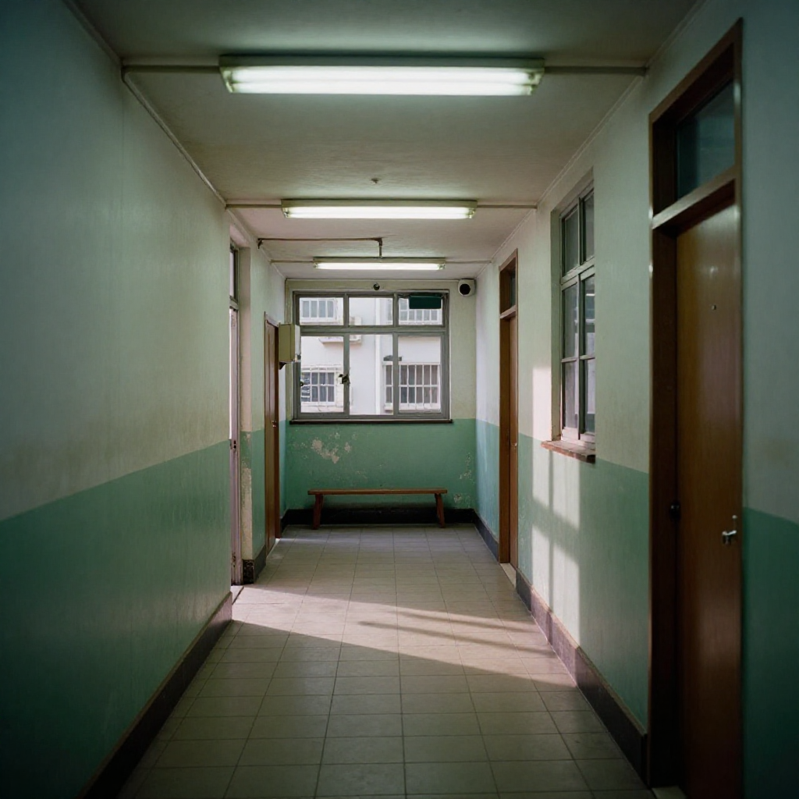
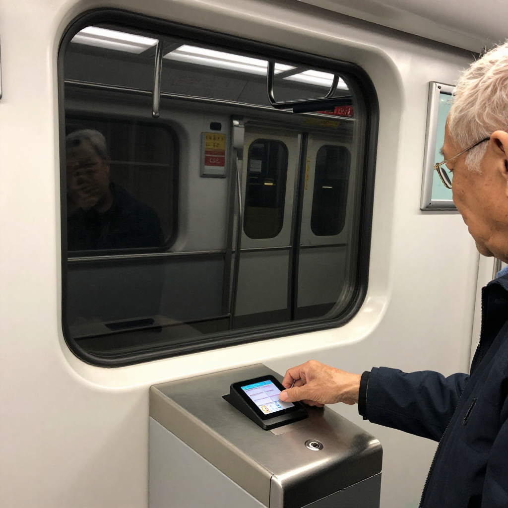
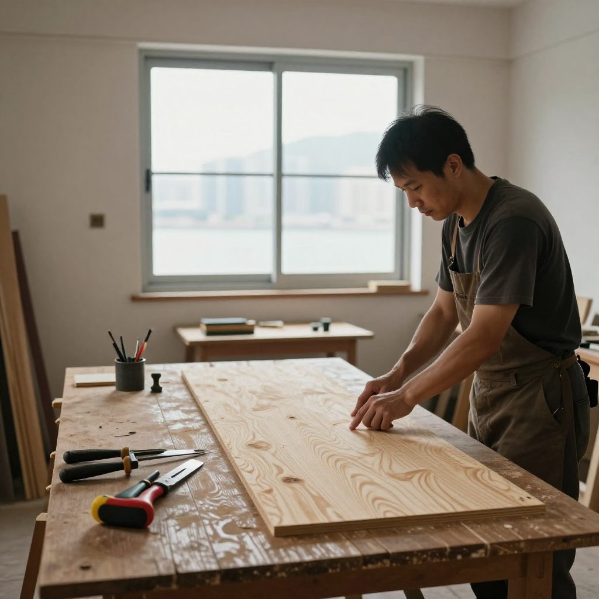
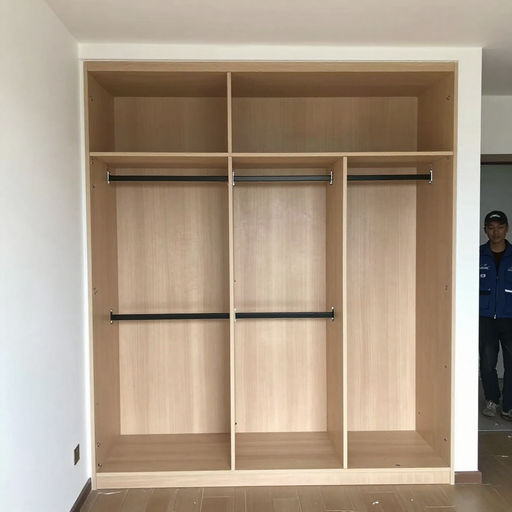
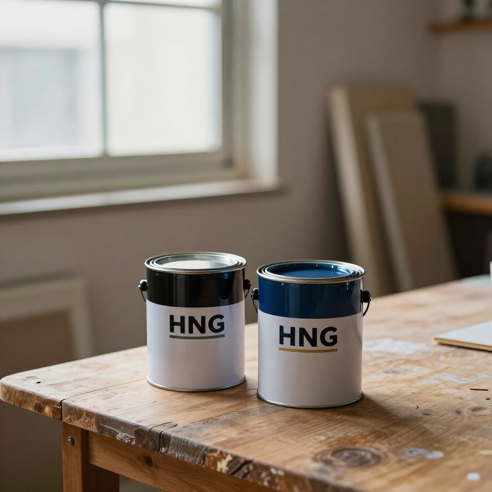

油塘阿伯嘅櫃同宏福苑嘅膠板

📍 場景：油塘長者屋邨 40 幾年老單位｜主講：祥叔（觀塘木行三十年幾老行尊）｜主筆：張丹楓｜整理：雲蕾｜日期：2026 年 9 月 20 日｜業主：陳伯（化名 72 歲）｜WhatsApp 報價：852 5190 2328
序幕：油塘站嗰個跨欄後生仔
九月十九號朝早，我同雲蕾搭港鐵去油塘。車廂入面人人低頭碌電話，我特登望一望新聞：油塘站又出咗單「跨欄跳閘」——一個十九歲後生仔，俾女職員查票嗰陣，當住幾十個乘客面前，撐住閘機頂跳過去走佬。成段片被人拍低上網，連警察都拉埋佢，一查先知佢長期用特惠票，唔肯用正價。
雲蕾喺度笑：「啱啱讀書嗰陣，用緊學生八達通啫；宜家做咗外賣員，仲特惠？」
我話：「你呢個就唔識喇，後生仔覺得特惠票同正價差唔多幾蚊，貪過癮、好玩，唔係真係窮，係心態。」
雲蕾收起電話，挨過嚟問我：「丹楓，你話我哋做裝修嘅，咩人見得最多？」
「兩種人。一種係肯花時間慢慢對單據、慢慢揀料嘅人；另一種係嫌你報價貴、轉頭搵平價師傅、兩年後再返嚟搵你執手尾嘅人。」
「所以我哋唔做第二種人生意。」
我哋兩個喺油塘站出閘。啱啱行過閘機，腦海又彈返出嗰段片。我深呼吸一下，諗：今日去嗰個單位，業主陳伯就係第一種人——四十年老屋邨，七十二歲，慢吞吞，但每一個細節都要問到底。呢個先係我哋最想接嘅客人。

第一幕：陳伯同佢四十幾年嘅老牆
開門，陳伯坐喺度食煙，望住個光牆發呆。
「陳伯，今日做板件驗收。E0 生態板到咗，你睇下牌子、厚度、產地，逐塊對。」
佢慢慢企起身，拎起一塊板，揸咗揸：「張師傅，我住咗呢度四十三年啦。搬入嚟嗰年，我太太大住肚，第二個就快出世。後生嗰陣做地盤，後生夠膽死，後生最鍾意喺光牆度鑽窿裝層板。鑽完無幾耐，水氣一攻，木板發黑，發黑就生蟲，生蟲就甩皮。」
「你哋行內有句老話——『十年唔拆嘅嘢，唔好打實；十年會拆嘅嘢，事先留位』。」
「所以你今日唔肯裝固定層板，要訂造到頂大櫃？」
「梗係。你話你用嘅係 E0 生態板，我信你，因為你寫咗單據，列明咗牌子、厚度、產地。呢啲就係保障。」
祥叔喺旁邊聽完，即刻插嘴：「陳伯你講得啱。我哋行內有句老話——『十年唔拆嘅嘢，唔好打實；十年會拆嘅嘢，事先留位』。」
「依家啲裝修佬，聽到我話要訂造，第一句問我『你住幾耐』；第二句就推薦我『做固定嘅啦，襟耐啲』。我答佢：阿伯我七十二，你同我講十年——我仲有幾多個十年？」
我同祥叔對望一眼，忍唔住笑。陳伯呢句，抵我哋今朝早起。

第二幕：宏福苑嗰塊發泡膠板
收工前去咗趟廁所，雲蕾傳嚟一段 BBC 新聞：大埔宏福苑火災獨立委員會第三場聆訊，揭露承建商宏業明知遮窗嘅發泡膠板唔阻燃，但堅持用；後來仲將阻燃同非阻燃嘅板溝埋用。一場火燒出幾條人命，先有人肯講真話。
我返去同祥叔講呢單新聞。祥叔聽完即刻拍枱：
「呢啲承建商冇良心！E0 同 E1 板每張差幾十蚊；防火板同普通板差百幾蚊。慳咗嗰幾百蚊，遲早出事——出事唔係賠錢咁簡單，係燒死人！」
祥叔行去陳伯個大櫃前面，用手指敲咗敲櫃背板：「陳伯你聽我講，呢塊背板同側板，我哋用嘅係同一級嘅 E0 生態板——唔係側板用 E0、背板用 E1。裝修呢行，最怕就係表裏不一——表面睇唔出，入面塞晒垃圾。」
「陳伯，其實做裝修佬最緊要係兩樣嘢——寫單據，講清楚用料；裝嘅時候，預埋十年後點拆、點換。你睇宏福苑，嗰啲發泡膠板裝上去，三年後要維修，邊個知佢溝咗啲乜？」
「所以我哋做訂造，永遠唔會打死——吊櫃用掛碼，掛碼可以拆；地腳用玻璃膠封，唔打實。將來換板、換門，唔使成幅牆拆。」

第三幕：水性漆同油性漆，老人家嘅細藝
驗完板，開始裝孫房嗰張床。祥叔拎起一罐漆：「陳伯，你孫房用嘅係水性漆，唔係油性漆。油性漆嗰陣天拿尼嗰陣勁，孕婦、小朋友、老人家唔好。你孫房之後你個孫要返嚟過夜，個孫日日搭港鐵返將軍澳做嘢——」
「乜咁啱？咁你更要小心——你個孫成日搭港鐵，遲早被查票。你同佢講，用返正價啦，長者卡都唔會走數嘅。」
「我鬧過佢。我話：『你阿爺我呢個年紀搭車都係用長者卡，唔會走數。』佢話：『阿爺你 out 啦，宜家邊個仲用正價？』我話：『我哋呢代人細個嗰陣，搭巴士唔畀錢俾人拉，司机親自押你去差館認人，認完先走得。』」
「陳伯你講得啱。我哋呢代人，細個嗰陣阿爸教落，借人錢要還、搭車要畀錢——呢啲係做人格。」
雲蕾喺旁邊細聲同我講：「丹楓，呢句要寫低——『搭車要畀錢，做人要老實，呢啲唔係大道理，係細藝。』」

第四幕：對講機嗰邊，同孫仔嘅一句話
收工前，陳伯突然問：「張師傅，我想同我個孫講一句話。你可唔可以幫我用對講機嗰邊——」
我同雲蕾對望一眼。我哋冇對講機，只有手機。
「你打個電話俾佢啦，就話阿爺裝修，叫佢呢個禮拜返嚟食飯。同我講一句：『搭車要正價，裝修要實淨，呢兩樣嘢你將來都要識。』」
我即刻打。電話嗰邊，陳伯個孫（化名阿俊）聽完，沉默咗三秒：
「阿爺，我知錯。嗰個跳閘嘅後生仔，我喺片入面睇到佢塊面——佢個樣，同我差唔多。」
陳伯喺旁邊聽到，眼眶即刻紅咗。
雲蕾喺記事簿寫低最後一句：「跨欄跳閘嘅後生仔同陳伯個孫，年紀只差幾歲。一個走數，一個肯認錯——分野就喺屋企有冇人同你講真話。」
尾聲：搭車要畀錢，裝修要實淨
收工，陳伯攞出兩個柑：「你帶返去沖涼果皮沖涼啦，我個女喺新會寄嚟嘅，今年新出嘅青柑，沖涼去濕。你做裝修佬成日出汗，啱晒。」
「唔使客氣。你幫我裝得實淨，我自然會回報你。呢個世界就係咁——老實人幫老實人，跳閘走數嘅後生仔，遲早撞板；偷工減料嘅承建商，遲早出事。你睇宏福苑嗰班人，幾錢都買唔番。」
我行出陳伯個單位，落樓梯嗰陣，又諗起今日兩單新聞——一單係後生仔走數，一單係承建商走數。一個走小數，一個走大數；一個走幾蚊車資，一個走幾條人命。但本質一樣：都係以為冇人睇到，就可以做衰嘢。
搭港鐵返屋企，我特登用八達通拍正價出閘。陳伯講得啱：搭車要畀錢，做人要老實。呢啲唔係大道理，係細藝。
我哋裝修佬就係要記住：每一塊板、每一支膠、每一口漆，裝落人哋屋企，就係裝落人哋嘅命。油塘阿伯住四十幾年，宏福苑嗰啲街坊住二十幾年，屋企係乜料佢哋唔知，但出事就知。我哋做嘅嘢，係要對得住十年、二十年後嗰個拆櫃換板嘅人。
「搭車要正價，裝修要實淨，呢兩樣嘢你將來都要識。」
——陳伯口述，張丹楓筆記，雲蕾整理，二〇二六年九月二十日，油塘長者屋邨工地
❓ 油塘阿伯三問
Q1：老屋邨裝修點解唔可以打實螺絲？
老屋邨牆身入面係石屎，外面係批灰，批灰層通常只有 5 至 8 毫米厚。固定層板用膨脹螺絲打實，螺絲入面吸水，十年後成支螺絲都鏽晒，想拆都拆唔到，要連成塊板成幅牆一齊拆。香港做法係訂造到頂大櫃用掛碼吊牆、地腳用玻璃膠封唔打實，將來換板、換門、換五金，唔使鑽牆。
Q2：點樣分 E0 同 E1 板？防火板同普通板差幾多錢？
E0 同 E1 板最大分別係甲醛釋放量。E0 每 100 克板材甲醛釋放量 ≤ 4 毫克，E1 ≤ 9 毫克，相差一倍。價錢方面，E0 比 E1 每張貴約 30 至 60 蚊。防火板同普通板最大分別係阻燃等級（一般用 B1 級或更高），每張貴約 100 至 150 蚊。訂造時單據要列明牌子、厚度、產地、防火等級——呢啲就係十年後維權嘅憑證。
Q3：裝修佬最怕咩客人？點解？
最怕「嫌你貴、轉頭搵平價師傅、兩年後再返嚟搵你執手尾」嘅客人。呢類客人通常唔肯對單據，淨係問「平幾多」，裝修佬為咗接單會慳料，塞 E1 當 E0、海綿當回彈棉——三五年後櫃門關唔實、軟包塌晒，業主先發現中伏。真正識揀嘅客人，會慢慢對單據、問清楚用料、肯花時間——呢類客人先係裝修佬最想接嘅客人。
本文配圖均為 AI 場景示意圖，僅供場景參考，並非真實工地照片或業主影像。
想知你個單位裝修要幾錢？
📱 一鍵 WhatsApp 張丹楓